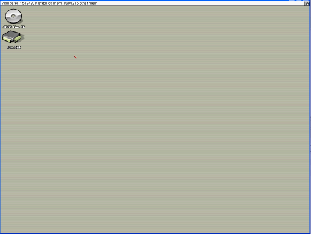

CHAPTER 2: The Wanderer
2.1: The Wanderer

Figure 2.1: The Wanderer
A long the top is the menu bar, curently it show the memory of your computer
The computer memory is dived into two section graphics and other memory
2.2 the Icons
 this is the CD-ROM icon with a title under nearth
this is the CD-ROM icon with a title under nearth
currently as of Nov 11 2005 AROS is booted off a CD-ROM
this is the Ram disk icon